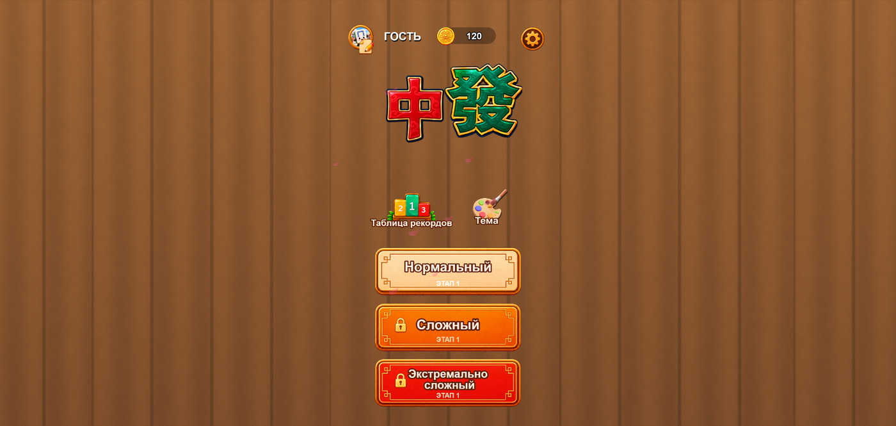
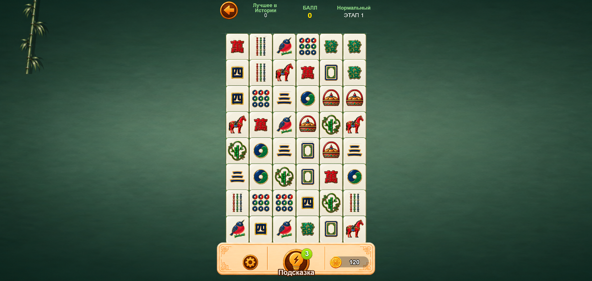
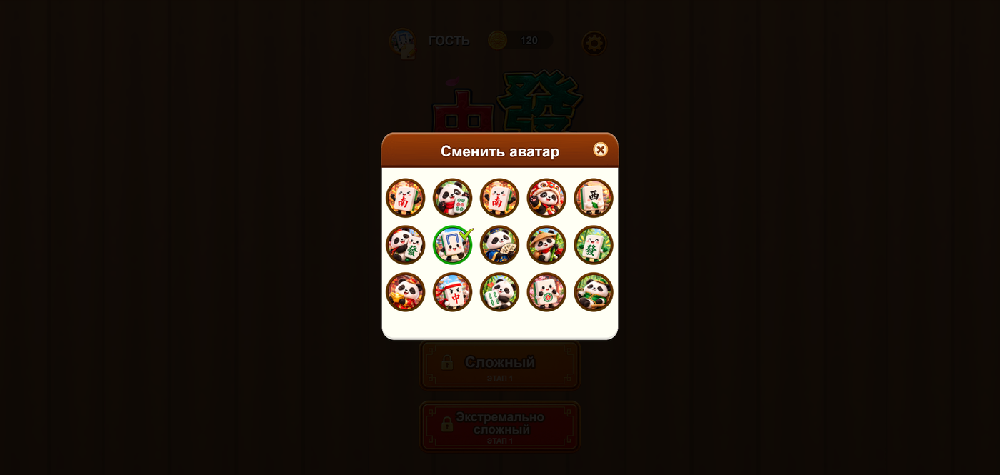
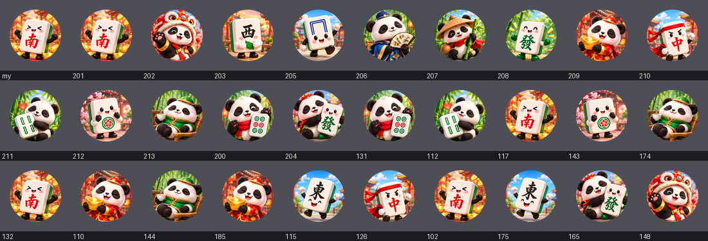
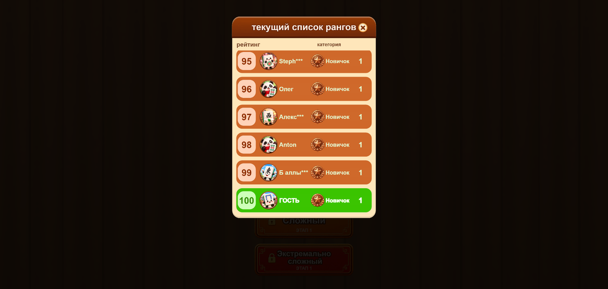
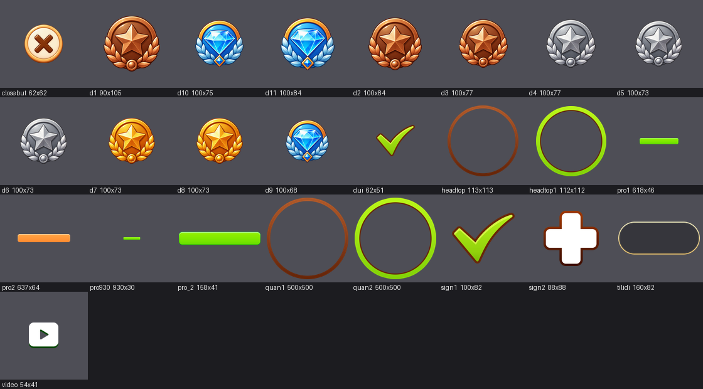
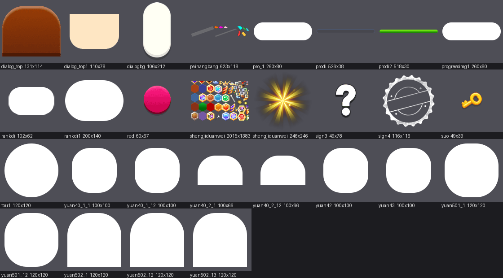
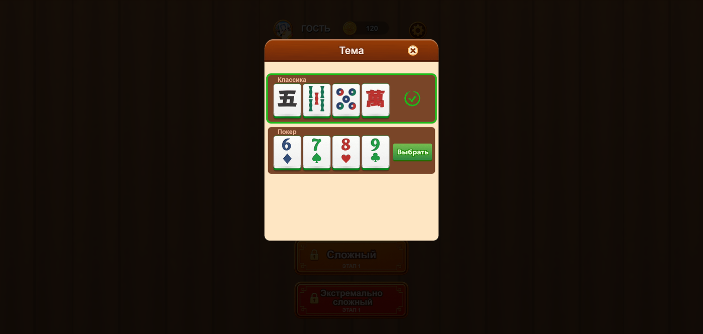
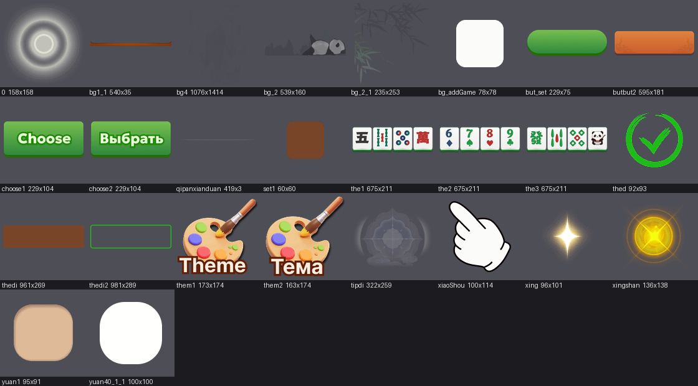
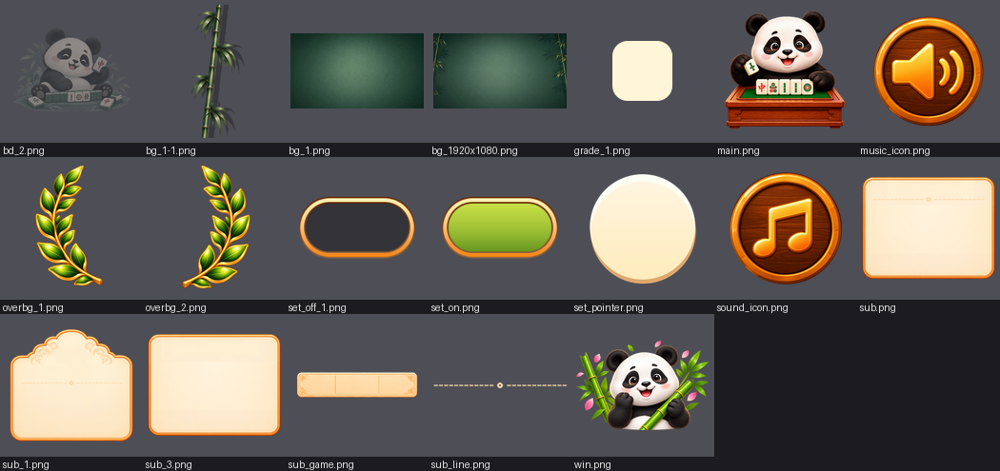

Сборка port-art2, 08.09.2026. Скриншоты сняты из живой игры, картинки вырезаны прямо из файлов сборки. Все числа посчитаны машиной: каждый кадр сравнён с оригиналом попиксельно.
Картинок в игре 428. Наших 350, чужих 78.
Отдельных файлов (атласы, звук): наших 10 из 84. Один файл это пачка картинок, поэтому проценты по файлам и по картинкам разные.
Слева меню, справа уровень. Плитки, кнопки, монета, шестерня, подсказка, замок, стрелка назад, рамка аватара и надпись на загрузке - рисунки Ани.

Меню

Уровень
В меню слева вверху кружок рядом с именем игрока, по нажатию открывается окно «Сменить аватар». Там теперь 15 рисунков Ани, рамка и галочка тоже её.

Второй набор из 130 аватарок подставляется выдуманным соперникам в таблице рекордов. В исходной игре там лежали фотографии реальных людей, вытащенные прежним разработчиком. Все 130 слотов перезаписаны рисунками Ани, ни одной фотографии в сборке не осталось.

сделано Проверено машиной: все 130 кадров отличаются от исходных.
Кнопка «Таблица рекордов» в меню. Строка соперника: место, аватарка, имя, значок ранга и уровень. Значков одиннадцать, они растут по мере игры. Из этой же пачки картинок собраны все окна игры - крестик, галочки, кольца аватарки, полосы прогресса.

Поставлено из присланного Аней:

Осталось чужим в этой пачке (в основном тянущиеся рамки окон, куда нельзя вставить рисунок с орнаментом - он размажется по середине):

Раньше в окне «Тема» было три набора: «Классика», «Покер» и «Милый». Третий был целиком чужой, 60 картинок, и рисовать его заново мы не будем. Теперь в окне два набора.

26 картинок. Заметные: подложка игрового поля, панда за доской, бамбук в углу, сетка на доске, звёзды за уровень, рука в обучении. Остальное мелочь.

Плитки использованы все, 55 из 55. Из интерфейса лежит без дела 19 файлов:

Это ландшафтные фоны (игра вертикальная), лавровые ветки, панда-победа, переключатели настроек
(в игре они другой конструкции), панда bd_2 - её пропорция не лезет в узкую полоску
за доской, и панель main для загрузки: там место под две летающие плитки, а не под
одну картинку.
| Шаг | Зачем |
|---|---|
| Дорисовать 26 кадров интерфейса | подложка поля, панда, звёзды, сетка |
| Рамки окон | нужны как отдельные части: угол, край, середина |
| Заменить 21 звук | сейчас своя только фоновая музыка |
Страница для команды. Внутри есть картинки исходной игры - они показаны как раз для того, чтобы было видно, что ещё предстоит заменить. Поисковикам страница закрыта.